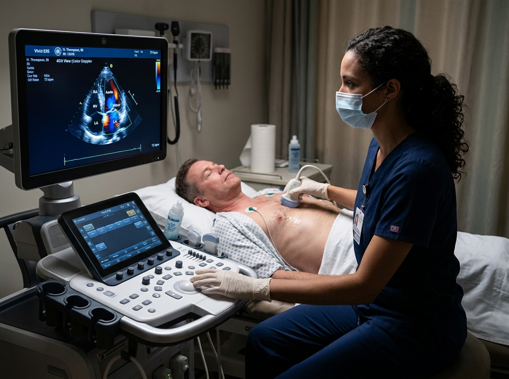

Comprehensive Heart Care Services
From advanced diagnostics to life-saving interventions, we provide a full spectrum of cardiovascular services to protect and restore your heart health.
Our Core Services
Each service is delivered by experienced specialists using the latest medical technology and evidence-based protocols.

Advanced ECG & Cardiac Monitoring
Our comprehensive ECG services range from standard 12-lead recordings to extended Holter monitoring and event recorders, providing detailed insight into your heart's electrical activity and rhythm patterns.

Echocardiography & Cardiac Imaging
Using advanced ultrasound technology, our echocardiography services provide real-time, detailed images of your heart's chambers, valves, and blood flow, enabling accurate diagnosis of structural and functional abnormalities.
Interventional Cardiology & Angioplasty
Our interventional cardiologists perform advanced catheter-based procedures to open blocked arteries, implant stents, and treat structural heart conditions with minimal recovery time.
Additional Cardiac Services
Beyond our core offerings, we provide specialized services to address a wide range of cardiovascular needs.
Electrophysiology Studies
Specialized testing to map the heart's electrical system and diagnose the cause of abnormal heart rhythms for targeted ablation therapy.

Nuclear Cardiac Imaging
SPECT and PET scanning to evaluate myocardial perfusion, detect ischemia, assess viability, and guide treatment decisions with precision.

Vascular Screening
Comprehensive vascular health assessments including carotid ultrasound, ABI testing, and peripheral artery disease screening.
How We Work
Our patient-centered approach ensures thorough evaluation and effective treatment at every stage.
Consultation
Detailed discussion of your symptoms, concerns, and medical history with a specialist.
Diagnosis
Advanced diagnostic tests to identify the exact nature and extent of your condition.
Treatment
Personalized treatment plan including medication, procedures, or lifestyle changes.
Recovery
Ongoing recovery monitoring, rehabilitation, and support for lasting heart health.
Find the Right Cardiac Evaluation
Select your primary symptom or health goal below to preview the diagnostic pathway, timing, and comfort profile recommended by our specialists.
12-Lead ECG + Low-Dose CT Coronary Angiography
Designed to evaluate exertion-triggered chest discomfort or tightness quickly by visualizing coronary blood supply alongside electrical rhythm tracings—often avoiding invasive catheterization.
Visit Preparation & Cardiac Rehab Guide
Track your readiness across pre-test preparation, procedure day milestones, and supervised cardiopulmonary rehabilitation.

Monitored Recovery & Support
Continuous ECG telemetry and board-certified exercise physiologists help every patient rebuild stamina safely after cardiac diagnosis or intervention.
Interactive Readiness Checklist
1 of 4 ReadyReady to Prioritize Your Heart Health?
Take the first step today. Our team of board-certified cardiologists is ready to provide you with advanced diagnostic evaluation, personalized treatment plans, and continuous compassionate care.